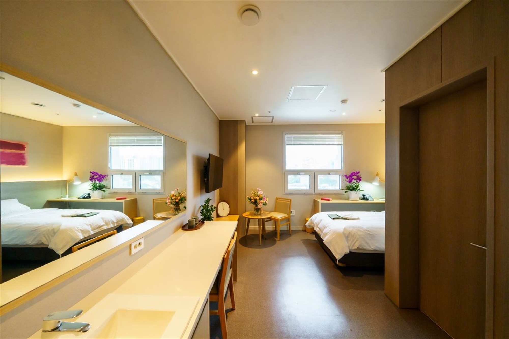

폐암 수술 후 기침과 숨참, 항암 중 회복은 어떻게 지내나요?
폐암 수술 후와 항암 중 시기의 회복을 하일렌요양병원이 입원과 외래 진료로 관리합니다. 수술받으신 병원 일정에 맞춰 단계마다 주치의가 진료하고, 환자와 상의하여 치료를 정합니다. 암 치료는 지금 다니시는 대학병원·암병원·종합병원에서 그대로 이어 가시면 됩니다.
폐암은 진행 정도에 따라 수술, 항암, 방사선 치료 등의 치료를 받습니다. 폐 수술 후에는 숨 쉬는 힘을 되찾는 것이 중요합니다. 하일렌요양병원은 수술 후 기침과 숨찬 정도를 지속적으로 확인하고, 필요에 따라 혈액검사와 흉부 엑스레이를 시행합니다. 항암 치료 중 부작용이 생기거나 호흡곤란 등의 증상을 보이면 담당 의료진이 환자 상태를 확인한 후 응급 조치를 합니다. 대학병원·암병원 진료가 필요한지 판단하고, 환자·보호자와 상의한 후 치료 방향을 결정합니다.

- 대상
- 폐암 수술 후 회복이 필요한 분 · 항암·방사선 치료 중인 분
- 이용 방법
- 입원 · 단기입원(금·토·일 주말) · 외래 진료(주 1~5회)
- 원내 검사
- 필요시 혈액검사와 흉부 엑스레이 촬영 · 주치의가 결과를 확인
- 입원 서류
- 소견서 또는 진료기록지 중 하나, 신분증, 피검사 결과지
- 문의
- 원내 상담실 · 카카오톡 채널 · 062-439-1000
아래에 폐암 수술 후와 항암 중에 환자와 보호자가 자주 물으시는 것을 모았습니다. 수술 후 시기를 앞에, 항암 중 시기를 뒤에 두었습니다.
폐암 치료는 어떤 순서로 이어지나요
단계마다 주치의와 상의하여 치료를 진행합니다.
- 선행항암 — 항암 회차에 맞춰 입원과 외래 진료를 나눠 수술까지 몸 상태를 관리합니다.
- 수술 — 수술 직후 통증·상처·합병증을 관리하는 시기입니다.
- 보조항암 — 항암 회차마다 부작용과 떨어진 면역을 입원이나 외래 진료로 관리합니다.
- 방사선 — 몇 주 동안 대학병원·암병원에 다니며 방사선 치료를 받는 시기입니다. 이 기간에도 입원과 외래 진료로 관리합니다.
- 표적·면역항암 — 지속적인 치료와 관리가 필요한 시기입니다.
폐암 의료진

장익완 병원장
- 조선대학교 의과대학 졸업
- 강원대학교 의과대학 의학박사
- 서울대학교병원 임상부교수 역임
- 누가요양병원 진료원장
- 엘리암요양병원 진료원장
- 대한림프 및 림프부종학회 정회원

이춘기 자문의
종양내과 자문의
- 미국 아이오와 대학병원 종양내과 전임의
- 미국 미시간 대학병원 종양내과 교수
- 미국 밴더빌트 의과대학 종양학 초청교수
의료진 약력은 의료진 소개에서 보실 수 있습니다.
수술 후 관리와 일상 복귀
통증 치료와 호흡운동, 암재활 운동치료에 집중합니다.
- 통증 치료 — 주치의가 아픈 부위와 양상을 살펴, 수술·항암·방사선 치료로 생긴 통증을 약물 치료, 통증유발점 주사, 자율신경 주사치료, 비침습적 무통증 신호요법 등으로 관리합니다.
- 호흡운동 — 기침과 숨찬 정도를 확인하고 의료진이 관리합니다. 수술병원에서 알려 준 호흡운동을 입원 중에도 이어 가도록 돕습니다.
- 암재활 운동치료 — 주치의가 환자 상태를 보고 운동 범위를 정한 후, 근력 및 균형감 강화와 스트레칭 운동으로 일상 복귀를 돕습니다. 입원·단기입원·외래 환자 모두 받으실 수 있습니다.
수술 후 기본 관리
- 주사·상처관리 전담팀의 수술 부위 소독
- 필요시 원내 혈액검사·흉부 엑스레이
- 24시간 상주 의료진 — 밤에도 당직 의료진이 확인해 처방합니다. 응급 상황이 생기면 상태를 확인하고 대학병원·암병원 진료가 필요한지 판단합니다.
수술 후 걱정
"폐암 수술 후 기침은 얼마나 오래 가나요? 참는 것이 좋은가요?"
수술 후 기침이 이어지면 숨 쉬는 일까지 신경 쓰이실 겁니다. 입원 중에 숨이 차다고 말씀하시면 병동 간호사가 상태를 확인해 주치의에게 보고하고, 주치의가 확인해 처방합니다.
수술 부위는 수술받으신 병원의 치료 지침에 따라 간호팀과 주사·상처관리 전담팀이 이어서 살펴 드립니다.
관리하는 동안에도 증상이 나아지지 않거나 오히려 나빠질 때가 있습니다. 그럴 때는 의료진이 살펴보고, 대학병원·암병원 진료가 필요하다고 보면 안내합니다.
수술 후 기침이 얼마나 갈지는 사람마다 달라 미리 말씀드리기 어렵습니다. 기침과 숨찬 증상의 원인은 대학병원·암병원·종합병원 진료에서 판단합니다.
기침을 참는 것이 좋은지는 아래 「더 읽어 보기」의 공식 블로그 글 「폐암 수술 후 기침, 전남광주에서 어떻게 지내나요?」에서 보실 수 있습니다.
"호흡운동은 퇴원 후 집에서도 이어가야 하나요?"
수술받으신 병원에서 받으신 호흡 연습 기구가 있으면 입원하실 때 함께 가져와 주세요. 어디까지 움직여도 되는지는 주치의가 몸 상태를 살피고 환자와 이야기를 나눈 후 함께 정합니다.
수술받으신 병원에서 알려 준 호흡운동을 꾸준히 이어 가는 것이 좋습니다. 호흡운동의 방법과 횟수, 이어 가는 기간은 수술받으신 병원의 안내를 따릅니다.
퇴원 후에는 단기입원이나 하일렌요양병원 외래 진료로 이어서 관리합니다. 퇴원 후 관리는 회복 과제별 안내에서 확인하실 수 있습니다.
치료 항목
항암부터 표적·면역항암 기간의 치료입니다. 치료 항목과 횟수는 주치의가 진료한 후 정합니다.
면역 · 온열 치료
- 면역 치료(싸이모신 알파 1 · 미슬토 등)
- 통증 치료(약물 치료 · 비침습적 무통증 신호요법 등)
- 고주파온열암치료
- 전신온열치료
- 고용량 비타민C
- 고용량 셀레늄
- 비타민 주사 요법
항암 · 방사선 시기의 치료
- 주사·상처관리 전담팀의 주사·수액
- 맞춤 항암식(끼니마다 환자에 맞춰 조정)
- 영양컨시어지의 식사 돌봄 — 식사량을 살피고 드실 수 있는 음식을 안내드립니다
- 케모포트 · 팔의 혈관으로 넣는 관(PICC) 등 카테터 관리
- 항암 부작용 관리(발열 · 설사 · 구토 · 손발 저림 등)
- 방사선 피부 관리
표적 · 면역항암 기간
- 표적·면역항암 치료 부작용 관리
- 정기 검사 일정 관리 · 힘드실 때 단기입원
항암 중 걱정
항암·방사선 치료 중에는 발열·오심·피로 같은 부작용 증상을 살피고 관리합니다. 이 시기에는 항암 부작용과 면역 저하 상태를 관리하기 위해 입원하십니다.
항암 주기 사이에는 단기입원을 치료 일정에 맞춰 이용하실 수 있습니다.
"항암 중에 숨이 차면 폐암이 나빠진 건가요?"
항암 중에 숨이 차면 덜컥 겁이 나실 겁니다.
숨이 찬 원인은 이 안내 글만으로 판단할 수 없습니다. 원인을 가리는 검사와 항암 일정은 대학병원·암병원에서 정합니다.
"밤에 갑자기 숨이 차면 어떻게 하나요?"
밤에 숨이 차거나 몸 상태가 달라지면 병동 간호사에게 바로 말씀해 주세요. 의료진이 24시간 상주하고, 밤에도 당직 의료진이 확인해 처방합니다.
하일렌요양병원에는 자체 응급실이 없습니다. 응급 상황이 생기면 담당 주치의 또는 당직의가 환자 상태를 확인한 후 응급 처치를 시행하고, 지금 치료받으시는 대학병원·암병원으로 전원할지 결정합니다. 야간 대응은 입원 안내에서 보실 수 있습니다.
입원과 외래 이용
환자의 상황에 따라 입원, 외래 진료 방법을 정합니다.
- 입원 — 수술받으신 병원에서 퇴원하시는 날 바로 입원하실 수 있습니다. 항암 일정에 맞춰 입원과 퇴원을 되풀이하실 수 있습니다.
- 단기입원 — 항암 주기 사이, 직장을 쉬지 않고 금·토·일 주말에 입원하실 수 있습니다.
- 외래 진료 — 주 1~5회, 퇴근 후 저녁 시간도 가능합니다. 방사선 치료 기간에는 외래 진료와 입원 모두 이용하실 수 있습니다.
"항암은 안 하는 경우에도 요양병원이 필요한가요?"
하일렌요양병원은 암 치료를 잘 받을 수 있도록 보존적 치료를 제공하고 치료 후 회복을 돕는 곳입니다. 항암을 하지 않으시더라도 입원이 맞는지는 원내 상담실에서 함께 정합니다.
입원하지 않으셔도 외래 진료로 회복치료를 받으실 수 있습니다. 치료 공간은 치료실 안내에서 보실 수 있습니다.
"며칠만 입원해도 되나요?"
하일렌요양병원의 단기입원은 치료 일정에 맞춰 이용하실 수 있습니다. 주중과 주말 모두 이용하실 수 있고, 일상생활이나 직장생활과 치료를 함께 이어 가기 어려우신 분은 단기입원으로 관리받으실 수 있습니다.
입원 서류는 소견서 또는 진료기록지 중 하나, 신분증, 피검사 결과지입니다. 소견서를 받기 어려우시면 지금까지의 진료 기록이 담긴 진료기록지만 발급받아 오셔도 됩니다.
단기입원과 외래 이용은 단기입원·외래 안내에, 입원 서류와 병실 안내는 입원 안내에 있습니다. 그 밖의 질문은 자주 묻는 질문에 모았습니다.
힐링 프로그램 · 운동
- 편백숲 트레킹 — 몸 상태가 괜찮은 날 함께 걷습니다.
- 암재활 운동치료 — 주치의 처방으로 받는 치료입니다.
- 그 밖의 힐링 프로그램 — 명상, 요가, 라인댄스, 캘리그래피, 뜨개공방, 매듭공예, 천연공방, 차 다도, 암기공(월 2회 강의), 주말영화
입원하지 않으셔도 외래 진료로 오셔서 참여하실 수 있습니다. 월별 일정은 프로그램 안내와 소식에서 알려 드립니다.
안심 픽업과 오시는 길
퇴원하시는 날 수술받으신 병원에서 하일렌요양병원까지 안심 픽업 서비스를 이용하실 수 있습니다. 입원 중 수술병원에 다녀오실 때도 이용하실 수 있습니다. 전남광주 시내 대학병원에서 차량으로 약 10분, 화순에서 약 30분입니다.
서울(용산역 KTX · 수서역 SRT)에서 오시면 광주송정역에서 안심 픽업을 이용하실 수 있고, 하일렌요양병원까지 차량으로 약 20분입니다. 열차 시각을 원내 상담실에 미리 알려 주세요.
전남광주통합특별시 서구 상무대로 1176 · 지하철 1호선 농성역 1번 출구에서 걸어서 약 8분입니다. 자세한 길은 오시는 길·면회 안내에서 확인하실 수 있습니다.
수술 날짜나 항암·방사선 일정이 정해지면 먼저 연락해 주세요. 입원일과 병실을 함께 정합니다.
카카오톡 채널 또는 전화(062-439-1000)로 1:1 상담을 받으실 수 있습니다. 주말과 평일 20시 이후 카카오톡 채널 문의는 다음 날 답변합니다.
외래 진료 접수는 월~금 09:00~17:30(점심 12:30~13:30), 토 09:00~12:00이고 일요일·공휴일은 쉽니다.
자주 묻는 질문
입원 중에 흉부 엑스레이를 찍을 수 있나요?
필요시 원내에서 혈액검사와 흉부 엑스레이 촬영을 하고, 그 결과를 주치의가 확인합니다. 흉부 엑스레이를 찍을지는 주치의가 진료에서 정합니다. 추적검사 주기는 대학병원·암병원의 판단을 따릅니다.
입원·외래·단기입원 상담은 원내 상담실에서 도와 드립니다. 궁금한 점이 있으시면 언제든 편하게 물어보세요.
제공 하일렌요양병원 · 갱신 2026-10-21